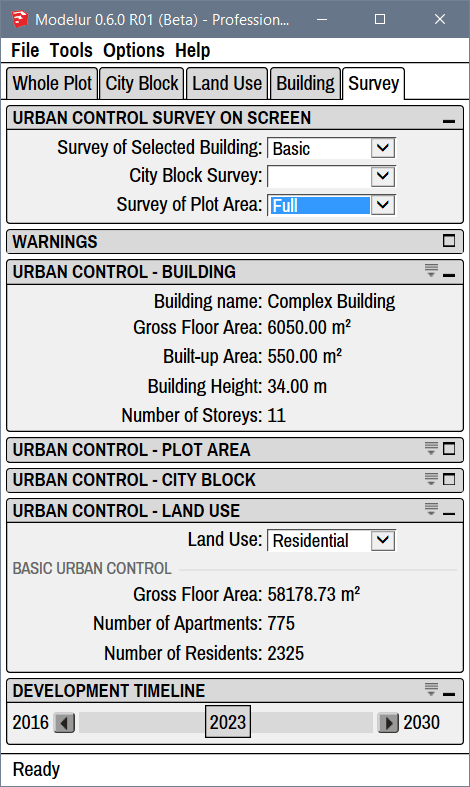
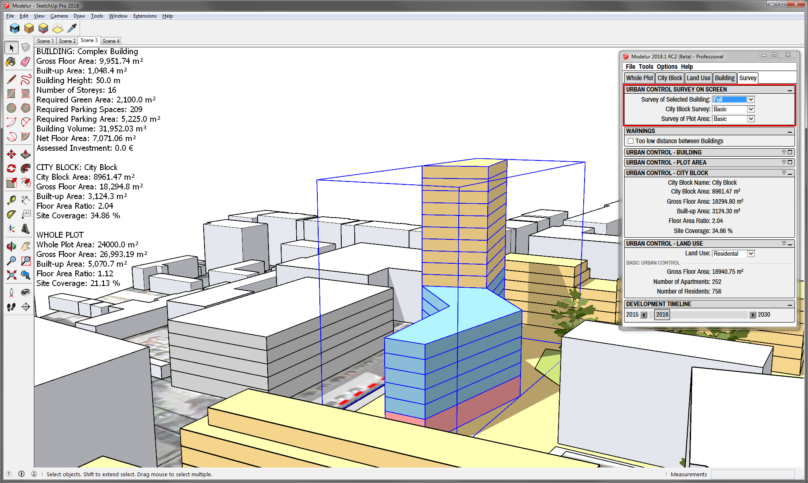

Survey
Survey tab is used to review current Urban Control Values of your project. Data is refreshed in real time, so any changes made to the model are instantly reflected. This is similar to the data table opened by Tools → Open Urban Control Data Table.

Compact and Extended View
In case you don't see separators between parameters you can turn them on using the extend icon on the top right corner of each panel:  .
.
Urban Control Survey on Screen¶
Current Urban Control Values can be displayed in Sketchup modelling area. All data displayed is refreshed in real time, so any changes made to the model are instantly reflected.

Survey of Selected Building
You can choose between three options: Blank, Basic, Full and Sum of selected. Blank means no data are displayed in Sketchup modelling area.
Basic option displays Building name, Gross Floor Area, Built-up Area, Building Height and Number of Storeys.
Full option displays all data included in the Basic option as well as Required Green Area, Required Parking Spaces, Required Parking Area, Building Volume, Net Floor Area, Assessed Investment and Number of Primary and Secondary units. Primary and Secondary units are defined in Land Use tab for each Land Use type.
When Sum of selected is chosen, Modelur will constantly sum up and display the total of all selected Buildings. It will show combined Gross Floor Area, Built-up Area, Mean Number of Storeys, Required Green Area, Required Parking Spaces, Required Parking Area, Assessed Investment and Sum of Gross Floor Areas of each Land Use including the ratio of Land Uses.
HeadsUp Display text
Sometimes the text that shows urban control values on screen is garbled. If this is the case, you can try selecting it (it's an actual SketchUp object) and change its size (and font) in SketchUp's Entity Info panel.
City Block Survey
You can choose between three options: Blank, Basic and Full. Blank means no data are displayed in Sketchup modelling area.
Basic option displays City Block Name, City Block Area, Gross Floor Area, Built-up Area, Floor Area Ratio and Site Coverage.
Full option displays all data included in the Basic option as well as Green Area Deficit, Parking Spaces Deficit, Mean Number of Storeys, Net Floor Area and Assessed Investment.
Survey of Plot Area
You can choose between three options: Blank, Basic and Full. Blank means no data are displayed in Sketchup modelling area.
Basic option displays Whole Plot Area, Gross Floor Area, Built-up Area, Floor Area Ratio and Site Coverage.
Full option displays all data included in the Basic option as well as Green Area Deficit, Parking Spaces Deficit, Mean Number of Storeys, Net Floor Area and Assessed Investment.
Warnings¶
Too low distance between Buildings
When checked, this real-time warning system will let you know if Buildings are placed too close together by coloring the misplaced Buildings in vivid red color. You can set the minimum distance parameters in Plot Parameters and in City Block Parameters. Please note that this feature is quite computer intensive so you might want turn it off on older computers or when you don't need this information.
Urban Control - Building¶
This section displays basic Urban Control Values of the selected Building. The same data is shown in Sketchup modelling area if Basic is selected in Survey of Selected Building in Urban Control Survey on Screen section.
Urban Control - Plot Area¶
This section displays basic Urban Control Values of the Plot area. The same data is shown in Sketchup modelling area if Basic is selected in Survey of Plot Area in Urban Control Survey on Screen section.
Urban Control - City Block¶
This section displays basic Urban Control Values of the City Block. The same data is shown in Sketchup modelling area if Basic is selected in City Block Survey in Urban Control Survey on Screen section.
Urban Control - Land Use¶
This section displays Gross Floor Area and Number of Primary and Secondary units for the selected Land Use. Primary and Secondary units are defined in Land Use tab for each Land Use type.
Development Timeline¶
Development Timeline slider is used to show/hide Modelur Buildings based on their construction / demolition year. The range is automatically set to -1/+1 from the min and max construction / demolition year as specified in Buildings. If no construction / demolition year is specified in any Building, span will be set to default as specified in defaults.json.
Example: Say you have modeled 10 Buildings. You specified that the oldest Building in the model was built in 2010 and the newest will be built in 2025. Development Timeline will thus stretch from 2009 (min -1) to 2026 (max +1). If you then set one Building's demolition date to be in 2032, Development Timeline will update its span immediately from 2009 to 2033.
Using the slider you can easily move back and forth in time. Modelur will show only existing buildings at selected time (year) and recalculate all urban control values so they reflect chosen year's state only.